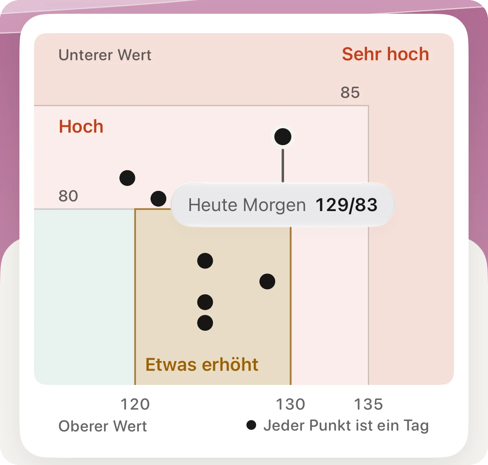
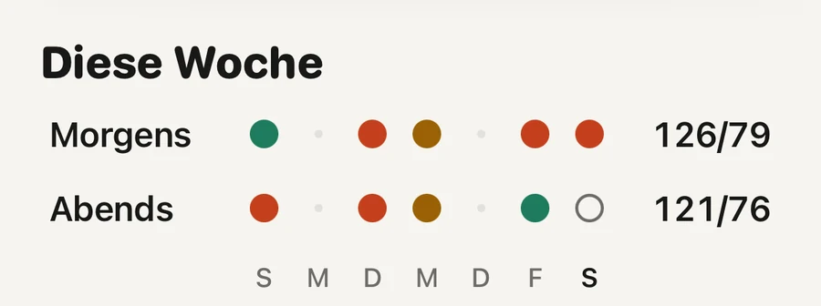

Praxis · Herz

Nimm sie als Anlass zu messen, nicht als Diagnose. Die Uhr misst keinen Blutdruck. Sie sucht in 30 Tagen Daten des Herzsensors nach einem Muster, und wenn sie eines findet, bittet Apple dich, sieben Tage lang zweimal täglich mit einem Oberarmgerät zu messen und mit einem Arzt zu sprechen. Es zählt der Durchschnitt dieser Woche mit der Manschette.
Die Apple Watch hat keine Manschette und kann deshalb keinen Blutdruck messen. Die Bluthochdruckmitteilungen nutzen den optischen Herzsensor auf der Rückseite der Uhr, denselben, der deinen Puls liest. Die Funktion achtet darauf, wie deine Blutgefäße auf jeden Herzschlag reagieren, sammelt das im Hintergrund über Zeiträume von 30 Tagen und schickt eine Mitteilung, wenn das Muster auf Bluthochdruck hindeutet (FDA, 2025).
Die Mitteilung enthält also keine Zahlen. Sie sagt nicht 150 zu 95. Sie sagt, dass deine Daten des letzten Monats so aussehen wie die von Menschen mit Bluthochdruck und dass es sich lohnt, richtig nachzumessen.
Das lohnt sich, weil Bluthochdruck meist stumm ist. Weltweit hat etwa die Hälfte der betroffenen Männer und haben vier von zehn betroffenen Frauen nie eine Diagnose bekommen (NCD Risk Factor Collaboration, 2021).
Weniger empfindlich, als die meisten erwarten. In der Studie hinter der amerikanischen Zulassung sollten 2.229 Menschen die Uhr 30 Tage lang tragen und parallel mit einem Gerät zu Hause messen; von 1.863 lagen genug Daten vor. Von denen mit Bluthochdruck bekamen etwa 41 von 100 eine Mitteilung. Von denen ohne Bluthochdruck bekamen etwa 8 von 100 trotzdem eine (FDA, 2025).
Wer in der Studie eine Mitteilung bekam
Daraus folgt zweierlei. Eine Mitteilung ist ein Hinweis, der stark genug ist, um zu handeln, aber sie kann falsch sein, und nur Messungen mit der Manschette klären das. Und die Uhr übersieht mehr als die Hälfte der Menschen mit Bluthochdruck, eine stille Uhr sagt also sehr wenig.
Eine Mitteilung ist ein Hinweis. Eine stille Uhr ist keine Entwarnung.
Bei deutlich erhöhtem Druck war die Uhr besser: Von den Menschen mit Hypertonie Stufe 2 bekamen etwa 54 von 100 eine Mitteilung (FDA, 2025).
Die ganze Routine mit den Gründen für jeden Schritt steht im Ratgeber zum Blutdruck-Tagebuch, mit dem dein Arzt arbeiten kann.
Dann war die Mitteilung wahrscheinlich einer der Fehlalarme. In der Studie bekamen etwa 8 von 100 Menschen mit normalem Blutdruck trotzdem eine. Erwähne sie beim nächsten Routinetermin und zeig die Woche mit deinen Messungen. Du musst nicht weiter täglich messen.
Zwei Dinge sind wichtig. Messungen zu Hause zählen nur, wenn die Routine gestimmt hat: eine Manschette, die zu deinem Arm passt, fünf ruhige Minuten, beide Werte behalten. Und wenn die Uhr sich später noch einmal meldet, wiederhole die Woche. Der Blutdruck steigt mit dem Alter meist an, und ein zweiter Hinweis ist einen zweiten Blick wert.
Das heißt nicht, dass dein Blutdruck in Ordnung ist. Die Uhr hat in der Studie etwa sechs von zehn Menschen mit Bluthochdruck übersehen, und Apple sagt selbst, dass die Funktion nicht jeden Fall erkennt (Apple Support, 2026). Lass deinen Blutdruck bei Routineterminen messen, egal was die Uhr sagt.
Die Funktion ist auch nicht für alle gedacht. Laut Apple ist sie nicht für Menschen unter 22, nicht für die Schwangerschaft und nicht für Menschen, bei denen Bluthochdruck schon diagnostiziert wurde. Wenn du behandelt wirst, sind dein Messgerät und dein Arzt maßgeblich, nicht die Uhr.
Öffne auf dem iPhone die Health-App, tippe oben rechts auf dein Bild oder deine Initialen, dann auf „Gesundheits-Checkliste“ und unter „Bluthochdruckmitteilungen“ auf „Konfigurieren“. Weil die Funktion mit Zeiträumen von 30 Tagen arbeitet, passiert im ersten Monat nichts.
Sie läuft auf der Apple Watch Series 9 oder neuer und der Apple Watch Ultra 2 oder neuer, mit watchOS 26 oder neuer. Apple nennt mehr als 150 Länder und Regionen, darunter Deutschland, Österreich, die Schweiz, Ungarn, das Vereinigte Königreich und die USA. Bei den neuesten Uhrenmodellen warten einige Regionen noch auf die Zulassung (Apple, Verfügbarkeit der Funktionen, gelesen im November 2026).

Morgens neben abendsJeder Punkt ist ein Morgen oder ein Abend mit Messungen, und seine Farbe zeigt, wo er an den Grenzen für zu Hause liegt. Nach den beiden Durchschnitten rechts fragt ein Arzt zuerst.
Aera, für iPhone und Apple Watch
Die Mitteilung selbst kommt von Apple, und Aera hat damit nichts zu tun. Aera beginnt dort, wo die Werte der Manschette ankommen. Es liest die Blutdruckwerte, die dein Messgerät in Apple Health speichert oder die du in der Health-App einträgst. In Aera trägst du keine Werte ein.
Es bildet den Durchschnitt deiner letzten sieben Tage mit Messungen und ordnet ihn nach den Grenzen für zu Hause einem von vier einfachen Worten zu: Im Bereich, Etwas erhöht, Hoch oder Sehr hoch. Das Wort erscheint, sobald du an drei Tagen Messungen hast. Bis dahin steht dort, dass Aera noch lernt. Unter dem Wert sagt ein Satz, welche der beiden Zahlen dich dorthin bringt und ob deine Werte morgens oder abends höher liegen.
Für den Arztbesuch gibt es den Bericht als PDF, als Tabelle oder als QR-Code. Ein Bericht über bis zu einen Monat ist kostenlos, das deckt die sieben Tage nach einer Mitteilung ab. Es gibt kein Konto.
Aera ist kein Medizinprodukt und stellt keine Diagnose. Ob du Bluthochdruck hast, kann dir nur ein Arzt sagen.
Nein. Die Apple Watch hat keine Manschette und zeigt keine Blutdruckwerte. Ihre Bluthochdruckmitteilungen suchen in 30 Tagen Daten des Herzsensors nach einem Muster und fordern dich auf, mit einer Manschette zu messen.
In der Studie bekamen etwa 41 von 100 Menschen mit Bluthochdruck eine Mitteilung, und etwa 8 von 100 Menschen ohne Bluthochdruck bekamen trotzdem eine. Eine Mitteilung ist ein Anlass zu messen, und keine Mitteilung ist keine Entwarnung.
Miss sieben Tage lang mit einem validierten Oberarmgerät, morgens zweimal und abends zweimal, behalte jede Messung und bring den Durchschnitt zum Arzt. Zu Hause gilt in Europa ein Durchschnitt von 135/85 oder mehr als hoch.
Die Apple Watch Series 9 oder neuer und die Apple Watch Ultra 2 oder neuer, mit watchOS 26 oder neuer, in den Ländern, die Apple nennt. Die Funktion ist nicht für Menschen unter 22, nicht für die Schwangerschaft und nicht bei diagnostiziertem Bluthochdruck gedacht.
Verwandte Notiz (auf Englisch): was eine Consumer-Uhr nicht messen kann
Verwandte Ratgeber: Wie führst du ein Blutdruck-Tagebuch, mit dem dein Arzt arbeiten kann? · Welcher Ruhepuls ist normal? · Was bedeutet das biologische Alter, das deine Uhr zeigt?